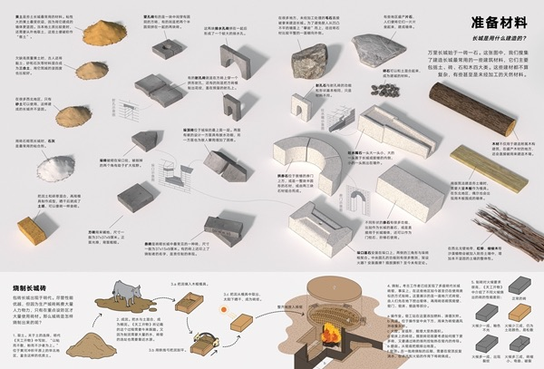
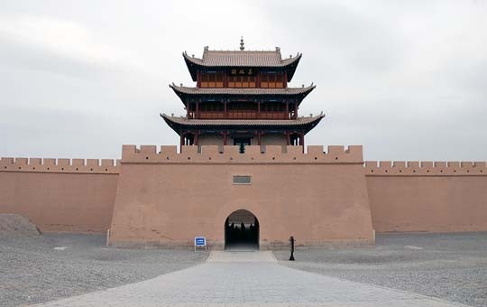
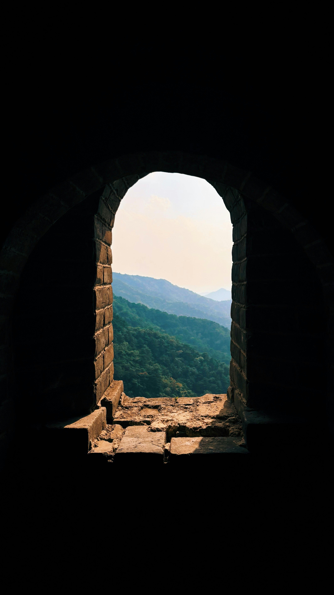
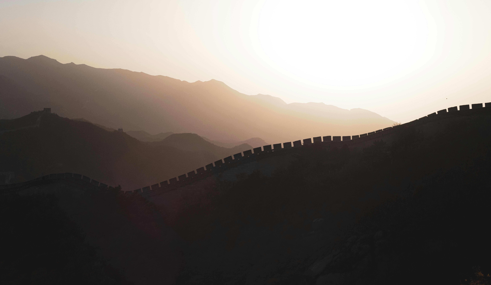
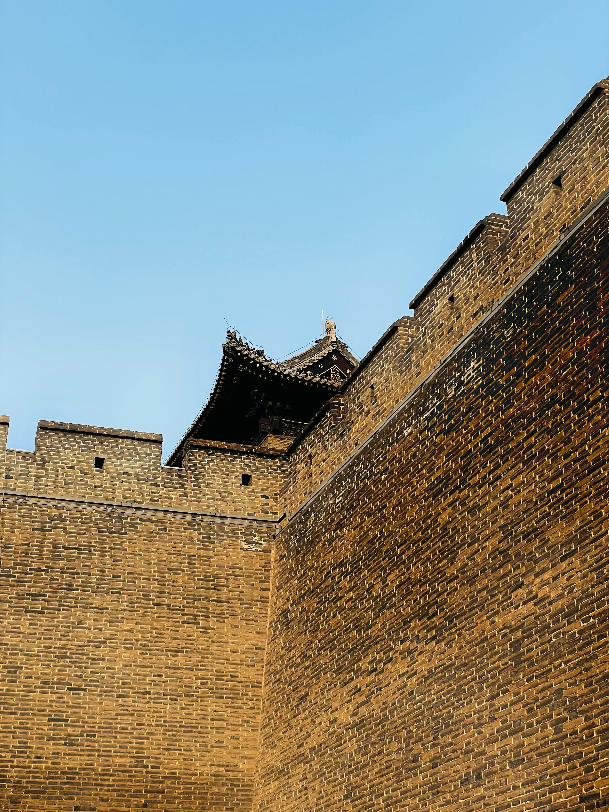

Architecture & Sites
La Grande Muraille de Chine est bien plus qu'un simple mur. C'est un système défensif complexe composé de murs, de tours de guet, de forteresses et de postes de signal. Chaque section reflète les techniques et les ressources locales de son époque.
Caractéristiques techniques
21 196 km
Longueur totale
4 à 8 m
Largeur moyenne
5 à 8 m
Hauteur moyenne
25 000+
Tours de guet
Éléments architecturaux
Tours de guet
Disposées tous les 90 à 180 mètres, elles servaient de postes d'observation, de casernes et de dépôts de provisions.

Matériaux
Terre battue, pierres locales, briques cuites liées au mortier de chaux et riz gluant. Le choix variait selon les ressources de chaque région.

Forteresses & Passes
Points de contrôle stratégiques comme Shanhaiguan à l'est et Jiayuguan à l'ouest. Ces portes commandaient l'accès à l'empire.
Postes de signal
Système de communication par signaux de fumée et de feu permettant de transmettre des alertes sur des centaines de km en quelques heures.
Chemin de ronde
Le sommet du mur, large de 4 à 5 mètres, permettait à plusieurs cavaliers de se croiser. Pavé de briques pour faciliter la marche.
Drainage
Des gargouilles et canalisations intégrées dans la structure permettaient d'évacuer les eaux de pluie et d'éviter l'érosion des murs.
Évolution architecturale par dynastie
221-206 av. J.-C.
Dynastie Qin
Terre battue & Pierre
Construction rapide avec les matériaux locaux. La terre battue est compactée entre des planches de bois. Priorité à la longueur sur la solidité.

206 av. J.-C. - 220
Dynastie Han
Extension vers l'ouest
Utilisation de roseaux et peupliers dans les zones désertiques. Innovation avec les tours de signal pour une communication rapide sur de longues distances.

1368 - 1644
Dynastie Ming
Briques & Perfection
Âge d'or de la construction. Introduction massive des briques cuites liées au mortier de chaux et riz gluant. Tours de guet massives et sophistiquées.

Exploration Immersive des Tronçons